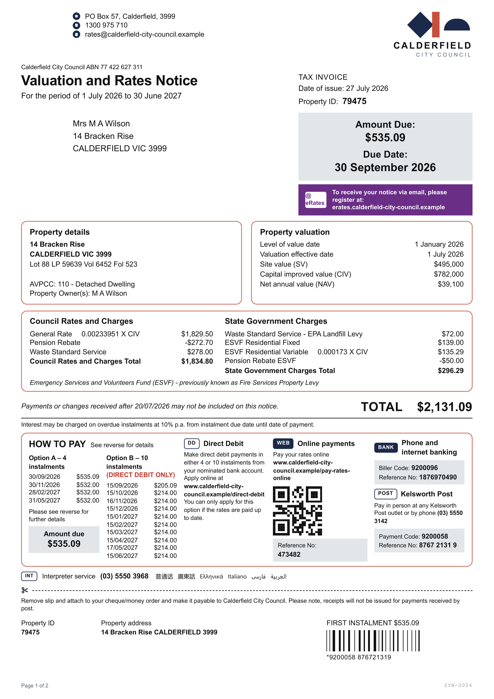
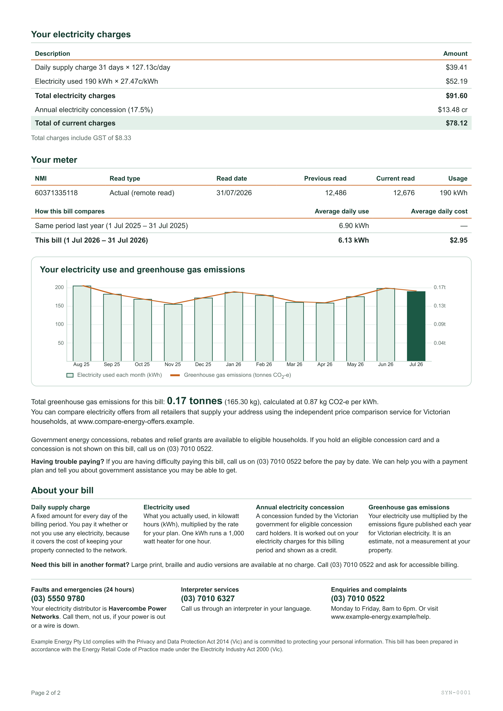
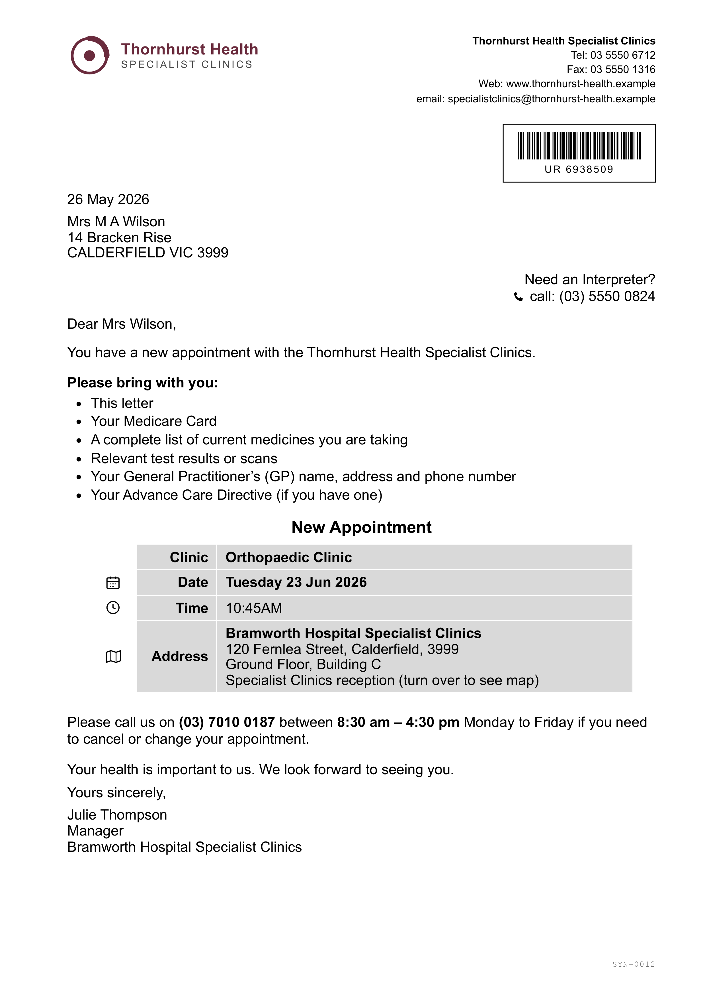
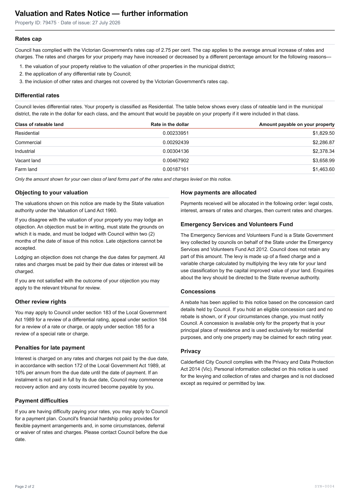
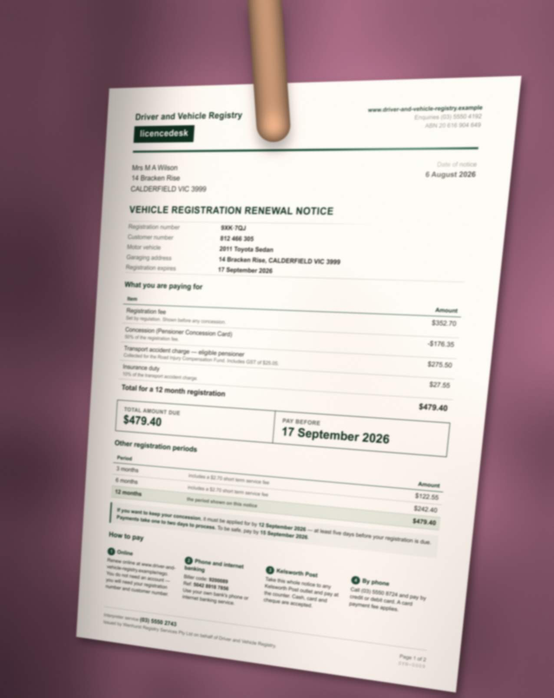
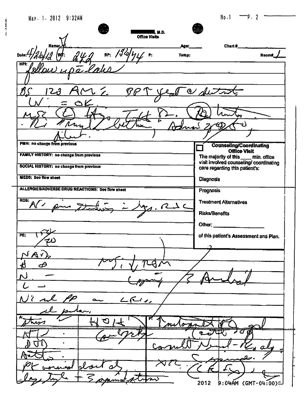
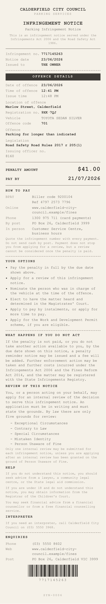
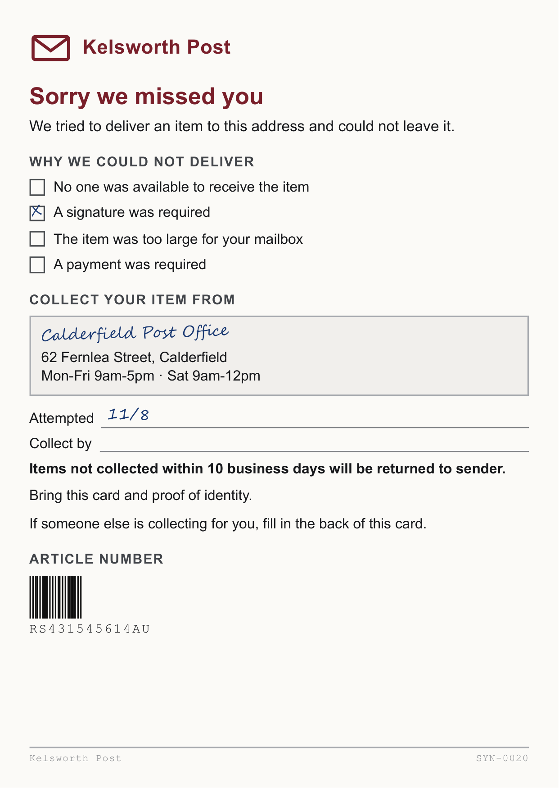
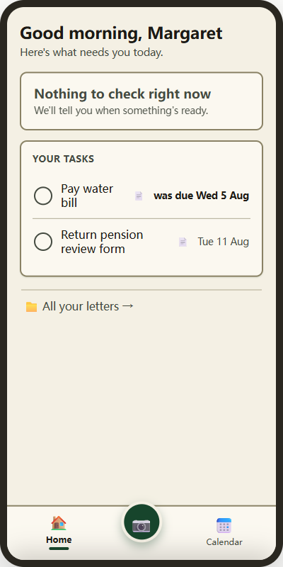

Nine photographs, taken in one go
This is what actually arrives. Margaret is 78, her cataracts are getting worse, and every bill she has still comes on paper. She photographs the week's post the way anyone would: whatever is on top, then whatever is under it. Nothing in this pile is sorted, one of them is not a letter at all, and two of them cannot be read.
1

An electricity billpage 1 of 2
2

A council rates noticepage 1 of 2
3

The electricity bill againpage 2, two photos later
4
Her grandsonnot a letter
5

A hospital appointmenta time, not a deadline
6

The rates notice againpage 2
7

A registration renewaltoo blurred to read
8

A doctor's notehandwriting, unreadable
9


Two letters, one photographlying side by side on the table
→
everything in this document happens in here
What she wants back
One list of what to do, and the day it has to be done. Nothing else.

Read the pile again, in order. Photograph 3 belongs with photograph 1, and there is a
different letter in between. Photograph 9 holds two letters at once. Photograph 4 never becomes anything. Photograph 7 is a real letter that cannot be read, and photograph 8 is one we have to apologise for.
There is no rule that sorts this. That is why the reading, not our code, decides where the
letters divide.